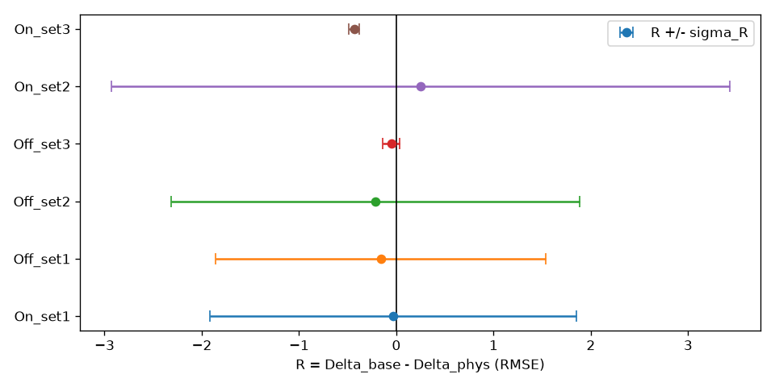
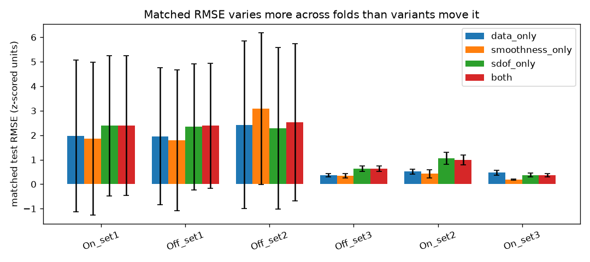
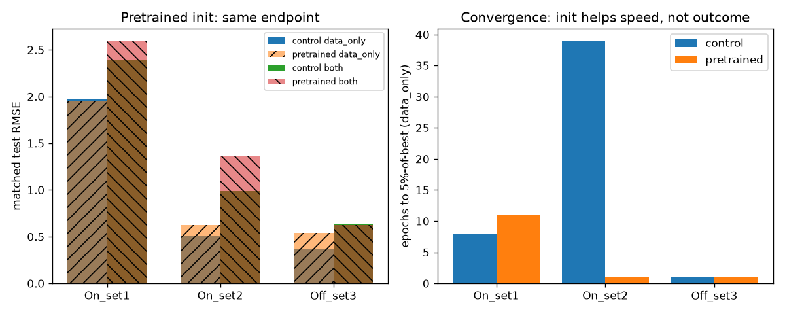

Event cameras watch vibration as a flicker of pixels. Struct-X turns that flicker into the waveform a collocated laser Doppler vibrometer (LDV) would have recorded — and is required to stay accurate when sensing conditions (lighting, contrast threshold, bias) drift. The same physical motion must give the same waveform. That invariance is measured, never assumed.
Stakeholders: structural-health-monitoring teams who need cheap non-contact sensing (bridges, beams, machinery). Alternatives are bonded accelerometers (change the dynamics), LDVs (accurate but expensive, tripod-bound) and frame cameras (blur above ~100 Hz). Struct-X trades raw accuracy for cost plus field stability: events give microsecond timestamps at ~140 dB dynamic range.
Δ = metric(shifted) −
metric(matched) across illumination/threshold shifts, and minimise it.R > σ_R); otherwise report
non-identifiable. Negative results count. Matched-set harm is reported
separately, never netted.Out of scope (never claimed): damage classification (no damage labels), generalisation beyond this rig, contrastive illumination loss.
30 hammer-impact free-decay trials, XJTU-DV-Beam (Xi'an Jiaotong University,
Zenodo 17447083, CC-BY-4.0). Conditions found in the archive (never
invented): On/Off × set1–3 = 6 conditions (K=6 LOCO folds).
Event files are Prophesee-style .dat (Event2D-packed); sensors are
1280×720 from headers (never hardcoded). LDV is 256 Hz velocity .txt,
integrated once to displacement + detrended. Trial pairing handles the
archive's On_set1_trai4.dat typo.
Preprocessing per trial: hot-pixel mask (>5× median) + refractory filter (<100 µs same-pixel) → ROI y-band (≥50% of peak, +8 px pad) → 5-bin × 2-polarity voxels → per-channel frozen train-set z-score (eps 1e-6). LDV: detrend → 4th-order low-pass at 500 Hz → resample 1000 Hz → frozen train z-score. Windows 1.0 s / 0.5 s stride, trigger-anchored (argmax|v|, no hardcoded trigger), 100 ms post-trigger exclusion. Real count: 326 windows. Splits: LOCO over the 6 found conditions; matched 60/20/20; val-shift/test-shift 50/50 (2–3 trials — the dominant noise source).
Voxel (10,H,W) → resize longest side to 224 + zero-pad square (adapter, pads
recorded) → encoder → waveform head (T=1000) + frequency head (softplus).
Two encoders: 3D-ResNet18 control (stem 3→2 by channel mean) and a ported
divided space-time TimeSformer (joint attention banned; Kinetics weights
from Hugging Face facebook/timesformer-base-finetuned-k400, SHA pinned,
C=2 stem surgery, temporal pos-embed interpolated to B frames, CC-NC 4.0
research-only).
Loss: L = L_LDV + λp·L_phys + λs·L_smooth + 0.1·L_freq; normalised SDOF
residual with the G5 collapse guard (amplitude-blind by design; amplitude
anchored by L_LDV); fp32 finite differences (central interior, one-sided
edges); m=1, m,c,k log-decrement-fit on ONE train trial per fold
(fd≈6.7 Hz everywhere, k≈1800, c≈2.2–2.9). Gradient-ratio controller with
5-epoch warmup; max 50 epochs, patience-10 early stop on validation
Δ_RMSE; Adam 2e-4; micro 8, eff 16. Everything tuned on val-Δ, never
matched RMSE.
Compute: Kaggle T4 (6-fold ResNet control + pilot + timing; ~16 h of 30 h quota) and a 24 GB RTX 4500 Ada (pretrained folds). No AMP (full fp32 — conservative deviation, no NaNs). Only best-per-fold checkpoints kept.
| Fold | data matched | data Δ | sdof matched | sdof Δ | both matched | both Δ |
|---|---|---|---|---|---|---|
| On_set1 | 1.98±3.10 | −1.65 | 2.38±2.86 | −1.61 | 2.39±2.85 | −1.61 |
| Off_set1 | 1.95±2.80 | −1.49 | 2.34±2.57 | −1.33 | 2.39±2.55 | −1.33 |
| Off_set2 | 2.43±3.43 | −1.79 | 2.29±3.29 | −1.59 | 2.53±3.21 | −1.58 |
| Off_set3 | 0.37±0.07 | −0.07 | 0.64±0.11 | −0.01 | 0.63±0.10 | −0.02 |
| On_set2 | 0.52±0.10 | +2.23 | 1.05±0.25 | +1.94 | 0.99±0.21 | +1.98 |
| On_set3 | 0.47±0.10 | −0.23 | 0.38±0.09 | +0.23 | 0.37±0.07 | +0.20 |
(heads: matched = test-matched mean ± trial-std; Δ = shift − matched. Full per-trial tables with se in results/final_verdict.json.)
Full metric set (new): Pearson r is +0.03…+0.19 matched and ≈0 or negative under shift — the r > 0.9 target is missed by an order of magnitude; the models do not capture waveform shape. MAE tracks RMSE. L_phys sits at 1e11–1e12 (the 1/dt² amplification of noisy outputs) and is 10–100× smaller for physics-trained variants — the residual is being minimised, it just doesn't buy waveform fidelity. Inference latency 4–10 ms/window for ResNet (load-dependent) and 42 ms/window for the TimeSformer-Base pretrained model, both on the 4500 Ada — comfortably under the 50 ms soft bar. (Per-variant, per-fold latencies in results/final_verdict*.json.)


Update 2026-11-04 — rerun on fixed code (mean-pool readout, SHA-gated Kaggle v2/v3 + remote JOB5/JOB6). The CLS-constant bug is out; the numbers below are valid — and the conclusion is unchanged: matched RMSE stays at constant level (~1.9–2.6), physics still loses.
| Run (fixed code) | data matched | data valΔ | both matched | both valΔ |
|---|---|---|---|---|
| On_set1 Kaggle amp v2 | 1.91 | +0.50 | 2.63 | +0.34 |
| On_set1 Kaggle surface v3 | 2.09 | +0.29 | 2.61 | +0.33 |
| On_set1 Ada B-grid (both valΔ) | B=3/5/7/9: 0.327 / 0.332 / 0.328 / 0.330 — B irrelevant | — | ||
| Ada JOB5 (both valΔ) | Off_set3 −2.68, On_set1 +0.33, On_set2 +0.14 | — | ||
Training still collapses in 1–11 epochs to near-constant output; pretraining only changes the starting point, not the endpoint. Frequency is captured (both: rel-freq err 0.02) but amplitude is blown (RMSE 2.63) — exactly what amplitude-blind physics predicts. No robustness gain anywhere.

O5: non-identifiable on all 8 backbone×fold settings. Largest |R| is 0.43 (On_set3-control) against σ=0.06 — and in the wrong direction. The physics term does not clear trial-to-trial noise anywhere.
RQ4 (corrected): |Δfreq| < |Δrmse| holds on all 6 control folds — but both
deltas are usually negative (shift tests easier than matched), so "degrades
less" is ill-posed here. The stored rq4 flags used a raw < comparison
that returns the wrong answer on negative Deltas (a real bug, now fixed to
rq4_abs in the verdict JSONs); the honest finding is that RQ4 cannot be
meaningfully tested until the matched upper bound is stable. Pretrained
On_set2 is the only clean positive. Matched harm: +0.1 to +0.7 RMSE on most
folds — physics costs
matched accuracy while buying no stability. The honest summary: a
regularisation signal with no measurable robustness gain and a consistent
matched-accuracy price.
Caveat that dominates everything: matched test RMSE itself spans 0.2–2.6 across folds with trial stds up to 5 on unit-variance data. Five-trial test sets with outlier trials cannot bound anything — the matched upper bound is unstable, so every Δ built on it inherits that instability.
| Pair | ms/window/step | Overhead |
|---|---|---|
| (a) data-only 122.0 vs (c) +SDOF 113.9 | — | −6.7% (noise) |
| (b) +smooth 116.8 vs (d) both 119.7 | — | +2.6% (noise) |
FLOP prior (~6T vs ~10¹⁰) agrees with measurement: no measurable
per-step cost. Convergence: physics reaches target in fewer epochs on most
folds (On_set2: data 39/49 vs sdof 5/16) but full-budget runs also occur
(Off_set2 both 2/50) — no consistent GPU-hour saving.
Verdict line: physics cost ~0% per step, saved no consistent GPU-hours, moved matched RMSE by +0.1 to +0.5 on most folds — regularisation benefit with no compute saving and no robustness gain.
| Other use | Their trick | Struct-X decision |
|---|---|---|
| Event–frame VDM (Wu et al. 2026) | IWE contrast max + NCC, survival-rate protocol | HW-trigger sync; trained encoder, not per-sequence optimisation |
| E-RAFT / TimeLens (optical flow, interpolation) | Short-term motion, frame synthesis | Voxels over time surfaces; surfaces as (unbuilt) fallback |
| HDR/high-speed video (Rebecq 2017) | 140 dB / µs timestamps vs CMOS | Sensor-motivation numbers; frames are the fails->100 Hz column |
| Representation taxonomy (Gallego 2022) | Frames vs surfaces vs voxels vs learned | Voxels + polarity + frozen train stats |
| Limitations literature (Wu §4.5) | Continuity/brightness-constancy failures | Δ exists to measure exactly this; ROI + refractory filter |